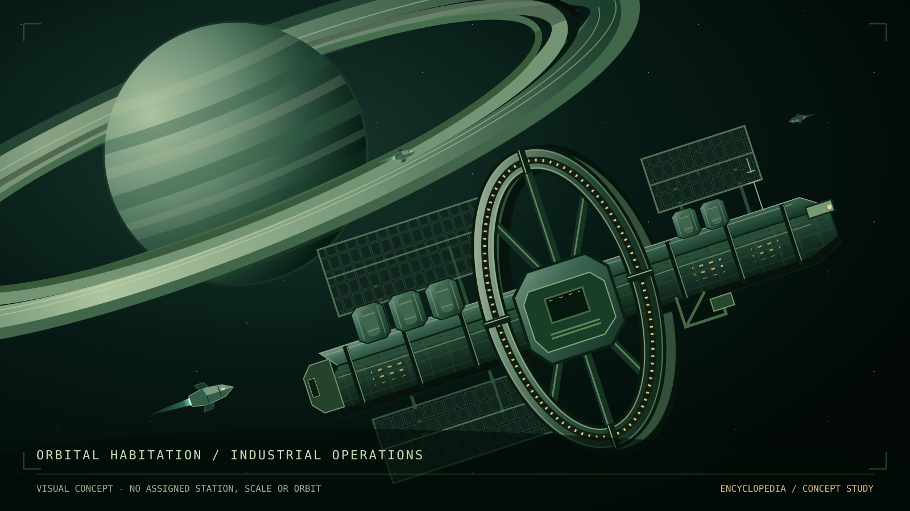

Lore / Society and settlement
Society and settlement
Saturn's settlements are becoming permanent communities within the lifetime of their first arrivals. Some people still expect to return to Earth. Others already regard Saturn as home.
Arrivals and generations
The setting is roughly 10-15 years after the establishment of the first permanent ring station. The adult population largely consists of arrivals from Earth. There are locally born children, but not yet a locally born adult generation. Communities, businesses, and local loyalties have developed within living memory. People still remember the promises that brought them here.
Major companies recruit primarily from their existing Earth workforce. Relocation is legally voluntary. Workers can stay on Earth, but economic pressure makes the offer difficult to refuse.
Some come to earn money and eventually return. Others bring their households and intend to remain. Temporary workers want to complete their obligations and leave; permanent settlers want to live here independently of an employer. These interests overlap without being identical.
Homes and working lives
Stations are the main homes and population centers. Rotating residential sections provide gravity. They are developing communities, not merely crew bunks. People can value their neighbors, their work, and Saturn itself while resenting company control.
In a rotating residential section, the floor continually turns its occupants with the structure. Its support is felt as weight; down is toward the outer floor, away from the rotation axis. Ordinary routines can be built around that steady support without keeping the whole station under a continuous engine burn.
A ship's acceleration can also press its occupants against a supporting surface, but a coast does not provide the same support. The way a home supplies weight and the way a vessel makes a journey are different design problems.
Cargo and industrial ships are workplaces and transport links. They carry crews and supplies between facilities and connect otherwise separated communities.
Moon outposts support particular resource or research needs. They do not exist simply because a surface offers room to build, and they remain secondary to the ring settlements. Surface gravity is not assumed to provide Earth-like living conditions; the accommodation and long-term health arrangements of their personnel remain open.
{kind=link}

The settlement network
Roughly three to five substantial station towns now serve numerous smaller industrial installations and a few specialized moon outposts. The first station remains an important hub.
This is a settlement network, not a fixed map. Stations and moons orbit Saturn; their exact orbits, separations, and transport routes remain open.
Details still open
A calendar year and the chronology of exploration before permanent settlement have not been chosen. Exact populations, station designs, habitation gravity levels, and the identities of additional stations and selected moons remain open.
The station illustration is an unassigned visual concept, not a design for a named place. Illustrations do not establish physical dimensions, construction history, or gravity levels without separate approval.